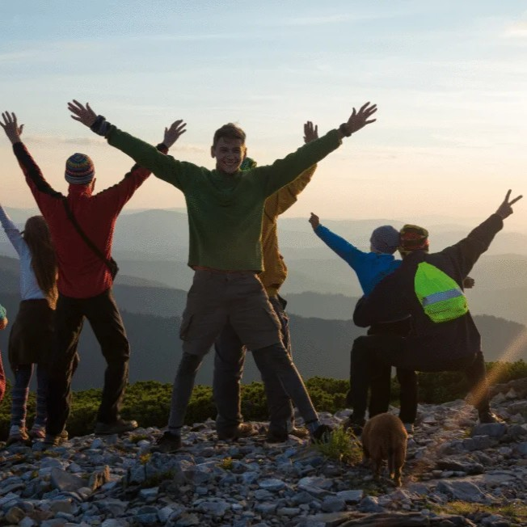
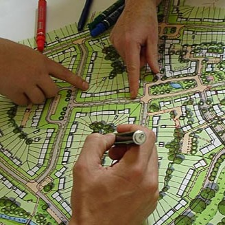

Academic Programs
The Department of Geography, Planning, and Recreation offers comprehensive degree and certificate programs designed to prepare students for careers in environmental and community sustainability, urban planning, parks and recreation management, and GIS technology. Discover your path to building better communities and buiding a better world.

Explore Our Degrees
Our degree programs provide hands-on learning experiences and prepare students for successful careers in environmental and society sustainability, community planning, park and recreation management, and GIS technology. From undergraduate foundations to advanced graduate research, find the program that matches your goals.
Undergraduate Programs
- Geography, Environment and Society, BS - 120 units with general studies requirements
- Geographic Science and Comunity Planning, BS - Coursework and one out of three emphasis areas.
- Parks and recreation management, BS - Recognized by the National Recreation and Park Associatin (NRPA)
Graduate Programs
- Geography, MS - Thesis and practicum options, flexible course and focus area options
- GIS / Remote Sensing, MS - One-year, 12 credits fall, 12 credits spring, 6 credits summer
- Sustainable communities, MA - Thesis project required to complete this program, an internship or field work required
Explore Our Certificate Programs
Certificate programs provide specialized training for career advancement and skill development in high-demand areas. Choose from professional certificates, graduate certificates, or undergraduate certificates that complement your career goals.
GIS with Remote Sensing Graduate Certificate
A post-graduate certificate that is well suited for students who want to enter the field of GIS or apply geospatial techniques and analysis to their desired discipline.
- Online
- 16 credits

Recreational therapy Graduate Certificate
Prepare future Recreational Therapists (RT) to meet the qualifications of the National Council for Therapeutic Recreation Certification (NCTRC) exam.
- Online
- 18 credits

Community Planning, Graduate Certificate
Prepares students for careers in local government urban planning departments, as well as in private development companies who interact closely with governments.
- In-person
- 15-credits
Why Choose GPR?
Hands-On Learning
- Field experiences and laboratory work
- Real-world research projects
- Professional internship opportunities
Expert Faculty
- World-renowned researchers and educators
- Personalized mentoring and guidance
- Collaborative research opportunities
Career Preparation
- Strong industry and agency partnerships
- High employment rates for graduates
- Professional certification opportunities
Financial Support
- Research and teaching assistantships available
- Wyss Scholars program for graduate students
- Federal financial aid for certificate programs
Contact Information
Email: geog@nau.edu
Phone: 928-523-2650
Location: Room 201, Building 70, SBS West, NAU Flagstaff Campus